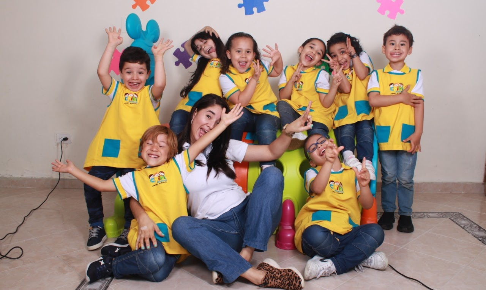

QUIENES SOMOS
Somos Un Centro Educativo donde formamos niños y niñas felices, creativos y llenos de valores, incentivando el deseo por aprender y descubrir mediados por el juego, teniendo en cuenta las necesidades y habilidades de cada uno. Muchos años de experiencia nos han dado gran reconocimiento, dando como evidencia una educación en valores y sabiduría.
POR QUÉ ELEGIRNOS?
Porque el Centro Educativo Chiki Aventuras cuenta con espacios para potencializar la creatividad y el desarrollo de los niños y niñas donde podrán aprender, compartir y estimular sus capacidades, con muchos métodos de aprendizaje para su formación integral
Contamos con docentes calificadas y capacitadas, quienes educan con amor, respeto y mucha alegría. Comprometidas con la educación y seguridad de nuestros pequeños
Brindamos atención semipersonalizado, nuestros grupos no superan los 15 estudiantes
Semanalmente nuestros niños y niñas se divierten con las clases de danzas, aprenden con la teacher de inglés y se acercan a la tecnología en la clase de informática
Clases de estimulación. (maternal, párvulos)
Actividades lúdicas recreativas
Horarios flexibles.
Ven, conócenos y permite que tu hijo/a disfrute de un espacio apto para sus necesidades.
Misión
El jardín infantil chikiaventuras es una institución educativa inclusiva que reconoce la diversidad
Y promueve el "aprender a aprender" desde la valoración del ser con sus limitaciones y potencialidades,
Mediante un modelo de formación humana y académica donde se valoran los diferentes ritmos de aprendizaje y se
Prioriza un clima afectivo y emocional que conlleva a los estudiantes a ser actores principales de sus propios aprendizajes
disfrutando de la vida escolar siendo portadores de conocimientos y valores democráticos, líderes de grandes
proyectos que permitan mejorar el tejido social, soportados siempre en la familia, en las normas sociales, en la ética ciudadana, la sensibilización
Frente al medio ambiente natural y el libre y positivo desarrollo de su personalidad .
Visión
Consolidarnos como una institución lider en la formación en y para la diversidad que brinde una educación a niños y niñas
Sin exclusión alguna, con bases sólidas para que adquieran
Los conocimientos, las actitudes y las destrezas que les permita
Comprender, transformar y crear el mundo en el que viven,
Reconociéndose como parte de una sociedad y asumiendo sus capacidades ciudadanas.

Requisitos de inscripción
- Fotocopia del registro civil
- Fotocopia carnet de vacunas actualizado.
- Fotocopia del carné de crecimiento y desarrollo
- Fotocopia de la cedula de papá ampliado al 150%
- Fotocopia de la cedula de mamá ampliado al 150%
- Fotocopia de la afiliación a la EPS
- Certificado de R.H sino está en el registro.